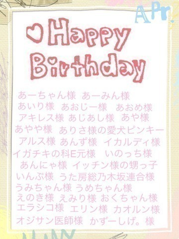
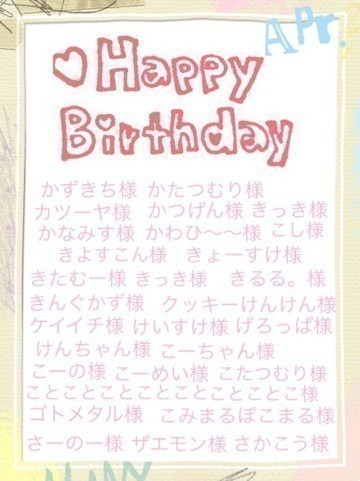
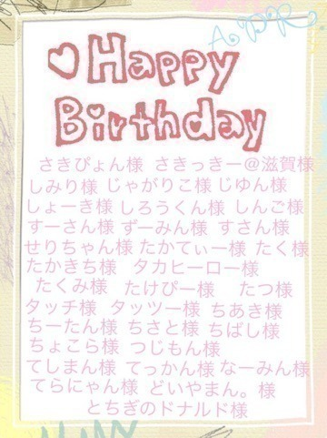
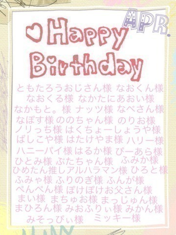
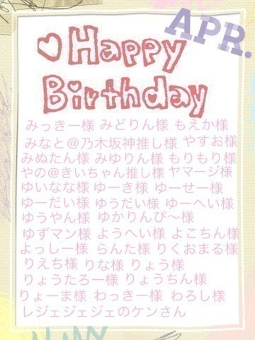
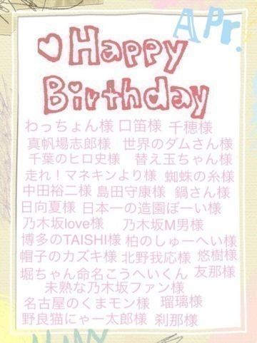
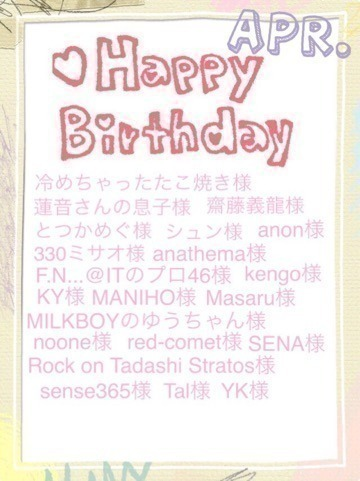
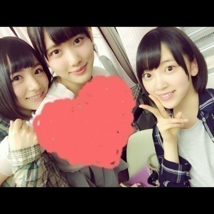
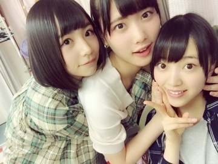

2015/0513Wed要注意人物
みなさまこんばんは！
日奈子だよ～٩(◦`꒳´◦)۶♪
ブログ更新土曜日にできなくて
ごめんなさい(ノω；｀)

乃木坂工事中で、12枚目シングルの選抜発表がありました！
私は今回もアンダーメンバーとして
活動していきます。
今回の選抜発表後、
今までで一番自分の思いや気持ちと戦った気がします。
このぐちゃぐちゃとした気持ちとは
まだ戦い終えていないので
上手く言えないし、どういう言葉にしたらいいかもわかりません。
でも、私は私らしく
等身大の自分を皆さんに見てもらえるように、今までよりももっと
努力して楽しんでいきたいです！
1年以上いるこの場所は
居心地がよくて
気持ちは良い意味でも悪い意味でも
落ち着いてて
楽しくて幸せを感じられる場所です。
でも、こういう気持ちとは
正反対の自分もいます。
もっと、皆さんにみてほしいし
認めてもらいたい。
居心地の良さに甘えて、自分はもっとグループや自分のためにできることはいっぱいあるのに、できないでいる。
活動をしていて楽しくて幸せだけど
もどかしくて悔しくて不甲斐なくて
やるせない思いもたくさんあります。
変わり続けて成長し続けていきたいけど、今いる場所が安心できて
自分が変わることによって
ファンの方や周りの人が離れていっちゃわないか不安で
自分の気持ちにセーブをかけて
一歩踏み出せない自分がいます。
前よりもたくさんの方に
選抜に選ばれてほしい。
選抜にいる日奈子がみたい。って
言われるようになってきました。
そういう皆さんの気持ちを聞くと期待されているんだ！って感じて
不安な気持ちにもなるけどそれ以上に嬉しくなります！
でも、逆に
正直、今の日奈子じゃ
今回のこの結果は妥当だよ。とか
納得いってしまうよね。って
思われている方もいると思います。
そう言われてしまうことは
期待されてないんだって落ち込むし
辛くもなります。
私が私自身じゃなかったとしても
今の日奈子じゃ当然の結果だってそう思うんだろうなって納得してしまいます。
すごく悔しいです。
だから、この12枚目のこの期間で
そういう方たちの思いも全部
覆していけるように
もっと期待してもらえるように
もっとドキドキして目が離せなくなるように、頑張ります！
たくさんの方を笑顔にしたい。
幸せにしたい。
誰かの希望や夢になりたい。
私の未来はこれからです。
今までで一番あつい夏に
今までで一番燃える夏になるように。
まだ踏み出せていなかった
このはじめの一歩を踏み出して
私は成長していきたいです！
いつも皆さんのことを振り回してしまい
ごめんなさい。
皆さんが私に夢をみてくれるように
皆さんの私に対する期待値が
止まることのないように
前に進んでいきます！！！
いつも、ありがとうございます。
みなさんのことがだいすきです。
このぐちゃぐちゃとした気持ちを
片付けられた時
皆さんにまた話せたらなっと思います！
12枚目制作がんばるぞ～
まいちゅん！
選抜おめでとう！
長々とは書かないよっ！笑
体調だけには気をつけてね！
無理をしすぎずに。。。
さりげなく
まいちゅん
ヨーグルト食べてるまいちゅん
遅くなってしまいましたが
4月お誕生日の方！
お誕生日おめでとうございます♡







それから、3月お誕生日の方抜けてた方です。。。ごめんね。。。
お誕生日おめでとうございます♪

5月お誕生日の方、このブログに
コメントお願いします♡
11枚目シングルの17次受け付けが
14日(木)15時から
15日(金)14時まで
あります♪
会いに来てください٩(◦`꒳´◦)۶♡


また、かきます！！！
雨風が強いね。。。
こわいよ～
おやすみなさいっ！！！
何度目の青空か？MV撮影の時の！
なつかしい！！
らりんさんだいすき♡
2015/05/13 00:06


コメント(1123)
きいちゃん可愛い＼(^o^)／
5/24の券あんまなかった
ガオーーー！！(^_^)
おやすみなさい
アンダーでもきいちゃんらしく頑張れ！！！
わたくし、誕生日5月23日なり〜*\(^o^)/*
大好き！です♡
推してます！
今日もきいちゃん可愛すぎですっ
きいちゃんなら絶対できる！
↑凡なことしか言えなくてごめんね(-人-)
今日はもう寝るから明日またコメントするね！
おやすみ！
アンダラの朗読からファンになりました^ - ^
12枚目では個別行きたいなぁって思ってます(^o^)
明るい楽しそうにしてるきぃーちゃんが大好きです^ ^
これからも応援してま〜す（≧∇≦）
周りにたくさん先輩たちいるから相談したりしてね？
いつかまた、選抜入りして躍動する姿を楽しみにずっと応援してます！
楽しみやけん！(▰╹◡╹▰)
きいちゃんの考えが全てわかるわけじゃないけど、ただただ応援してます、選抜メンバーの人たちの壁は厚いからね…でもきいちゃんなら突破できる^ ^
今回はアンダーに塩アイスが揃ったし、何かと仲良いところがみられるかな？楽しみにしてます。では。
12thも頑張ろうな！
勝負の夏がやってくる(^^)
あ、5月生まれだからお祝いよろしくね。
今回の悔しい気持ちをぶつけて成長できるように祈ってるよ！
その気持ちが無ければ上には上がれないから！！
12枚目はアンダーに塩アイスが揃ったね(=´∀｀)人(´∀｀=)
何かと一緒になることも多いのかな？
3人で高みを目指して頑張って欲しいと思ってるよ（＾ω＾）
それじゃおやすみ〜
ファンになりたてですが応募してます♪
12th京都での握手会行くからね
きいちゃーん(･∀･)
きいちゃんがどんなポジションでも応援しとるからね(￣∇￣)
12th期間のきいちゃんの活躍を期待してます♪
きぃちゃんおつかれさま、
つぎがあるよっていいかたしかうかばないけど
つぎだよ！つぎはいるよ！
がんばってね！
きいちゃん、
夏っぽいよね！
12枚目、2期生がまいちゅんを支えてください笑
堀北コンビ久しぶりに見れて嬉しいんだ〜
お互いを励みにして頑張ってね！
そして是非堀ちゃんを釣り部入部に入部お願いします(o･ω-人)
夏の全国ツアーが受験生の僕の最後の息抜きです！絶対あてるので、最高のライブお願いします！
5月24も、握手会いくので楽しみです！
それまで勉強します！
こないだは握手ありがとう♡♡
初めて行ったんだけどきいちゃんほんとかわいかった₍₍ ( ‾᷄꒫‾᷅ ) ₎₎
また会いに行きたいな♩
アンダーでの活躍見れてすごく嬉しいし、そこで輝いてるきいちゃんがすき！
でもきいちゃんがもっと上を目指してるなら応援するね！
5月誕生日です（´-`）.｡oO（
ではまたコメントするね♡
俺も就活キツいけど、きぃちゃんの葛藤に比べれば全然ちっちゃなことです。
熱いブログ、ありがとうございます。
12th握手会行きます
いっぱい葛藤してきぃちゃんの納得のいく答えを出してください。その時にまた一回り大きくなったきぃちゃんが見られると僕は思います^ - ^
京都の個別初めてきぃちゃん行くよ！^_^
できたら名前覚えといてほしいな〜(*^o^*)
でもチャンスはまだまだたくさんあるよ！おれは今のままのきいちゃんが好きでファンになったんだからアンダーでも今のままの元気なきいちゃんがみたいな( ´ ▽ ` )ﾉ
また選抜に入れるように一緒にがんばろ！
これからも身体に気をつけて頑張ってください(O_O)
3月誕生日なんだけど3月の時コメできなかった
初コメです‼︎
日奈子ちゃん可愛いよ‼︎
次選抜がんば•̀.̫•́✧
きっと認めてもらえる日が来るはず‼︎
きいちゃんなら大丈夫って信じてるよ〣( ºΔº )〣
書いてくれたら幸いだよぉ〜。
いやそんなことより。
日奈子がアンダーだろうが選抜だろうがどこに居ても何をしても応援して行くと決めてるから、日奈子は日奈子のやりたいようにやっていってほしいよ。
思いのままに、さらけだして。
これが推しに対する思いだと思っておる、勝手に。
どのポジションでもファンに見せる顔は笑顔だけだし、そんな日奈子の僅かながら微力の事となることは俺はやっていくつもりだよ。
12枚目期間も活動頑張れ。
俺も頑張るし、日奈子の頑張りを見て、余計に頑張っていく。
無理だけはしないでください、あなたの笑顔だけで夢を見れる事が可能なので。
無理するなよ！！笑マジで！笑
がんばれ。
選抜にもなって欲しい！だから頑張ろ！日奈子の笑顔はいつでも元気にしてくれるから笑顔は忘れちゃダメだよ(*^_^*)
日奈子ファンとして支えられることは支えていくよ！日奈子はまだまだこれからだよ
コメントする